|
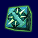 Lightsaber
Offence - Atak Mieczem
Jest podstawow± umiejêtno¶ci± pozwalaj±c± na zapanowanie nad
mieczem. Kolejne stopnie tej umiejêtno¶ci pozwalaj± na mocniejsze
ataki, wiêksz± si³ê przy blokach oraz daj± wiêksz± szansê na
nieodparowanie ataku przez przeciwnika i przewrócenie go.
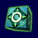 Lightsaber
Deffence - Obrona Mieczem
Kolejne poziomy pozwalaj± na odbijanie strza³ów, daj± lepsze mo¿liwo¶ci
obrony przed atakiem mieczem przeciwnika oraz
szanse na odparowanie ataku.
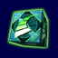 Lightsaber
Throw - Rzut Mieczem
Aby rzucaæ mieczem potrzebny jest przynajmniej pierwszy poziom tej umiejêtno¶ci.
Wtedy miecz leci przed siebie na krótki dystans i wraca prosto do gracza.
Kolejne stopnie pozwalaj± na wiêksz± kontrolê nad lec±cym mieczem
oraz wyd³u¿aj± zasiêg rzutu
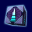 Jump
- Skok
Jest to podstawowa moc drastycznie zwiêkszaj±ca mo¿liwo¶ci skoku
rycerza jedi.
Poziom 1 - Jedi skacze 2 razy wy¿ej, ni¿ normalnie
Poziom 2 - Jedi skacze 4 razy wy¿ej, ni¿ normalnie
Poziom 3 - Jedi skacze 8 razy wy¿ej, ni¿ normalnie
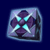 Push
- Pchniêcie
Pozwala posiadaczowi tej mocy na odepchniêcie od siebie ró¿nych postaci
i przedmiotów. Je¿eli postaæ uderzy w jak±¶ powierzchnie, otrzymuje
obra¿enia.
Poziom 1 - Przewraca przeciwnika
Poziom 2 - Dodatkowo popycha go
Poziom 3 - Mo¿e przewróciæ i popchn±æ wiele celów. Mo¿e te¿ zakoñczyæ
blok mieczem
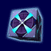 Pull
- Poci±gniêcie
Pozwala rycerzowi Jedi przyci±gn±æ do siebie przeciwników lub inne
przedmioty.
Poziom 1 - Przyci±ga ró¿ne przedmioty, prze³±czniki lub jednego wroga
Poziom 2 - Dodatkowo Jedi mo¿e "wyci±gn±æ" broñ z r±k
przeciwnika, czyni±c go przez pewien czas bezbronnym
Poziom 3 - Najsilniejsze poci±gniêcie. Jedi mo¿e przyci±gn±æ wiele
przeciwników i ich bronie
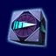 Speed
- Szybko¶æ
Kiedy jest u¿yta, spowalnia ¶wiat dooko³a Jedi, co pozwala mu na
szybsze poruszanie siê, atakowanie (i my¶lenie)
Poziom 1 - ¦wiat zwalnia do 75% przez 10 sekund
Poziom 2 - ¦wiat zwalnia do 50% przez 10 sekund
Poziom 3 - ¦wiat zwalnia do 25% przez 10 sekund
UWAGA: W trybie Multiplayer ta moc nie zwalnia ¶wiata i innych graczy,
tylko przyspiesza gracza.
Sense
- Widzenie
Pozwala graczowi na zobaczenie przeciwników (tak¿e tych niewidzialnych),
przyjació³ i przedmioty, nawet przez ¶ciany, w podanych kolorach:
Przeciwnicy - na czerwono
Przyjaciele - na zielono
Przedmioty i bronie - na ¿ó³to
Przeciwnicy z kluczami i przedmioty wa¿ne
dla misji - na niebiesko
Poziom 1 - Dzia³a na ma³ym obszarze, pokazuj±c wrogów i przyjació³
przez 10 sekund
Poziom 2 - Pokazuje bronie, przedmioty, wrogów i przyjació³ przez 30
sekund
Poziom 3 - Pokazuje dodatkowo ilo¶æ ¿ycia wrogów i przyjació³ przez
60 sekund
UWAGA: Moc nie odnawia siê podczas korzystania z mocy
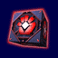 Grip
- Chwyt
Pozwala na duszenie ró¿nych postaci
Poziom 1 - Trzyma postaæ zaznaczon± celownikiem, unieruchamiaj±c j±
Poziom 2 - Pozwala na podniesienie jej i zadanie obra¿eñ.
Poziom 3 - Najsilniejszy chwyt pozwalaj±cy na sterowanie chwytem, co
pozwala na spuszczenie przeciwnika z przepa¶ci, wrzucenie go na ¶cianê
lub przeciwników, którzy przewracaj± siê po uderzeniu cia³em.
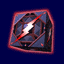 Lighting
- B³yskawice
Ta ciemna moc pozwala na wyrzucenie z r±k niebezpiecznych piorunów rani±cych
przeciwników
Poziom 1 - Szybko strzela krótk± b³yskawic± dok³adnie przed siebie
Poziom 2 - Pozwala na d³u¿sze strzelanie b³yskawic±
Poziom 3 - Pozwala na strzelanie ogromn± b³yskawic± rani±c± wielu
przeciwników na raz
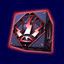
Rage - Sza³
Zwiêksza odporno¶æ na ataki, oraz si³ê i szybko¶æ w³asnego ataku,
kosztem zdrowia.
Aby u¿yæ, gracz musi mieæ przynajmniej 25 zdrowia. Po u¿yciu gracz
musi odpocz±æ 10 sekund
Poziom 1 - Jedi jest chroniony przed 50% obra¿eñ, nie mo¿e zgin±æ
oraz ma silniejszy atak
Poziom 2 - Jak wy¿ej, plus Jedi jest chroniony przed 75% obra¿eñ i
atakuje 25% szybciej
Poziom 3 -
Jak wy¿ej, plus Jedi jest chroniony przed 90% obra¿eñ i
atakuje 50% szybciej
Drain
- Drena¿
Pozwala na przeniesienie czyjej¶ energii ¿yciowej do siebie samego.
Poziom 1 - Jedi potrafi wyssaæ czyje¶ ¿ycie przez bezpo¶redni kontakt
z ofiar±
Poziom 2 - Jedi potrafi wyssaæ czyje¶ ¿ycie z krótkiego dystansu
Poziom 3 - Jedi potrafi wyssaæ ¿ycie nawet kilku osób z du¿ego
dystansu
Heal
- Leczenie
Ta moc zwiêksza ilo¶æ ¿ycia rycerza Jedi
o maximum 25, wysysaj±c przy tym ilo¶æ mocy
Poziom 1 - Jedi musi siê zatrzymaæ i medytowaæ, aby siê leczyæ.
Proces koñczy siê przy ruchu lub ataku
Poziom 2 - Jedi mo¿e leczyæ siê w ruchu, ale proces leczenia zatrzymuje
siê podczas ataku
Poziom 3 - Jedi leczy siê szybciej, nawet podczas ruchu lub walki
Jedi
Mind Trick - Trik Umys³owy
Jedi mo¿e chwilowo nie byæ postrzeganym przez przeciwników lub na krótko
zmieniæ w przeciwnika w sojusznika
Poziom 1 - Jedi mo¿e byæ nie postrzegany przez jednego wroga (na którego
siê wycelowa³o i u¿y³o moc) przez 5 sekund
Poziom 2 - Jedi mo¿e nie byæ postrzegany przez wszystkich wrogów przez
10 sekund
Poziom 3 - Jedi mo¿e nie byæ postrzegany przez wszystkich wrogów przez
30 sekund lub zamieniæ wroga w sojusznika (trzeba na niego celowaæ
podczas u¿ycia mocy) te¿ przez 30 sekund
Protection
- Ochrona
Pozwala rycerzowi Jedi na zmniejszenie obra¿eñ odbieranych przez ciêcie
mieczem, strza³y przeciwników, wybuchy i inne nieprzyjemne sprawy. U¿ycie
powoli wyczerpuje moc
Poziom 1 - Jedi jest chroniony przed 25% obra¿eñ
Poziom 2 - Jedi jest chroniony przed 50% obra¿eñ
Poziom 3 - Jedi jest chroniony przed 90% obra¿eñ
UWAGA: Ta moc nie chroni przed obra¿eniami zadawanymi ciemn± moc±
Absorb
- Absorbcja
Zamienia obra¿enia zadane mocami pchniêcia,
poci±gniêcia, duszenia, drena¿u i b³yskawic w moc
Poziom 1 - Poch³ania 1/3 mocy u¿ytej przez atakuj±cego
Poziom 2 - Poch³ania 2/3 mocy u¿ytej przez atakuj±cego
Poziom 3 - Poch³ania ca³± moc u¿yt± przez atakuj±cego
UWAGA: Ta moc nie chroni przed obra¿eniami fizycznymi, pociskami...
DODATKOWE MOCE W TRYBIE
MULTIPLAYER
dostêpne tylko w grach dru¿ynowych
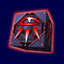 Team
Energize - Do³adowanie Przyjació³
Pozwala na przekazanie mocy pobliskim przyjacio³om:
Jednemu - 50 punktów mocy, dwóm - 33, trzem lub wiêcej - 25
Poziom 1 - Daje moc na normalnym zasiêgu
Poziom 2 - Daje moc na 1,5 zasiêgu
Poziom 3 - Daje moc na podwojonym zasiêgu
Heal
Other - Leczenie Przyjació³
Leczy pobliskich przyjació³
Jednego - 50 punktów ¿ycia, dwóch - 33, trzech lub wiêcej - 25
Poziom 1 - Leczy na normalnym zasiêgu
Poziom 2 - Leczy 1,5 zasiêgu
Poziom 3 - Leczy na podwojonym zasiêgu
do góry
|